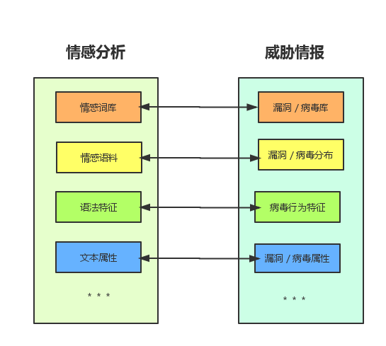

这些想法在前半年做毕业设计的时候就有了一些，毕业设计是做自然语言处理的情感分析，主要是挖掘文本和语句特征做出情感分类和判断以及舆情分析，这就很类似于目前做的威胁情报和响应。对应关系：
无论是自然语言处理的情感分析还是网络安全的威胁情报，都是基于已有的数据，这其中包括已有的基础数据（例如情感词汇／语法特征或病毒漏洞库／病毒特征／病毒行为），也包括已有的分类数据（情感语料库／病毒库／漏洞库）来甄别或者判断未知数据的属性，是什么情感极性或是不是病毒或漏洞。威胁情报吹的再高，到头来获取的还是这些基础数据。数据存储本身没有技术含量，最重要的部分还是在关联分析和机器解读以及情报决策上。所以归根到底是分类问题，使用决策算法是解决的方法。
这其中最重要的我觉得是漏洞和病毒的特征建模和挖掘，这是态势感知的基础和标准，也是威胁情报的关键。如何获取漏洞特征，如何挖掘病毒行为，并建立与病毒或漏洞类型相关的模型是我们需要思考的。同时我觉得就像情感分析的结果一样，威胁情报的结果也不应该是确定的，在情感分析结果描述中，尤其是多分类情感，我们通常会得出某一个语料是某一类情感极性的概率是多少，并不会直接说属于某一类，所以我们的威胁情报结果也不应该直接归为某一类，一方面是防止模型的偏差导致感知结果错误，相反，给用户多种结果展示，不同结果概率不同，让用户去了解威胁的类型；另一方面这对于不断精确我们的威胁评价模型也相当有意义。 提高对真正威胁的响应速度，缩短损失发生的窗口期，排除大量无效告警是我们作为数据研发人员需要重点做的，这些工作我觉得主要在于以下几点：